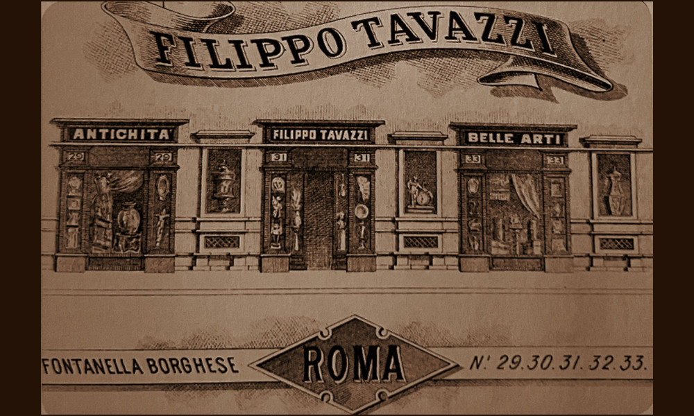

NOME

- Dati biografici
- Albero familiare
- Luoghi
- Relazioni
- Bibliografia
- Opere trattate
Filippo Tavazzi (1857-1924) fu un antiquario romano attivo tra Otto e Novecento. Nel corso del tempo aprì nella capitale diverse sedi (Fontanella di Borghese, Piazza di Spagna e via Condotti), tutte situate in eleganti palazzi, nei quali esponeva oggetti di antichità e belle arti.
Non sono molte le notizie riguardanti la vita del mercante. Ricordato da Ludwig Pollak nelle sue memorie, ebbe uno stretto rapporto con il conte Gregor Stroganoff (1770-1857), del quale fu amico e confidente.
Nei primi del Novecento, Tavazzi acquistò un villino ai Parioli che fece decorare in stile moresco dal pittore il pittore sivigliano José Villegas Cordero (1844-1921). Qui espose la collezione Santini, da lui acquistata in toto a Ferrara, che conteneva un numero importante di opere di maestri ferraresi. L’antiquario vi risiedette fino alla morte, avvenuta nel 1924, dopo che un grave dissesto finanziario causato da alcune sfortunate compravendite nel settore immobiliare aveva scosso i suoi ultimi anni.
Oltre a gestire la galleria in proprio, all’inizio del XX secolo, Tavazzi si unì in società con gli Jandolo per creare la Casa di vendite Jandolo&Tavazzi, in cui fu impiegato il figlio Guido(?-1942).
Bibliografia essenziale:
- Jandolo, A. (1935), Le memorie di un antiquario., Milano, Ceschina.
- Pollak, L., Merkel Guldan, M. (1994), Römische Memoiren : Künstler, Kunstliebhaber und Gelehrte, 1893-1943., Roma, L'Erma di Bretschneider.
- Tolosani, D. (1913), I colleghi d'Italia: Romani., In «L'Antiquario», VI, 1, pp. 1-4
Vedi le opere transitate presso l’antiquario documentate nell’archivio fotografico della Fondazione Federico Zeri: catalogo